重点内容
进程与线程
- 进程与线程的基本概念：进程/线程的状态与转换
- 线程的实现：内核支持的线程，线程库支持的线程
- 进程与线程的组织与控制
- 进程间通信：共享内存，消息传递，管道
CPU调度与上下文切换
- 调度的基本概念：调度的目标
- 调度的实现：调度器/调度程序（schedule），调度的时机与调度方式（抢占式/非抢占式），闲逛进程，内核级线程与用户级线程调度
- 典型调度算法：先来先服务调度算法；短作业（短进程、短线程）优先调度算法，时间片轮转调度算法，优先级调度算法，高响应比优先级调度算法，多级队列调度算法，多级反馈队列调度算法
- 上下文及其切换机制
同步与互斥
- 同步与互斥的基本概念
- 基本的实现方法：软件方法；硬件方法
- 锁：信号量；条件变量
- 经典同步问题：生产者-消费者问题，读者-写者问题；哲学家进餐问题
死锁
- 死锁的基本概念；死锁预防
- 死锁避免；死锁检测和解除
进程与线程
进程的概念与特征
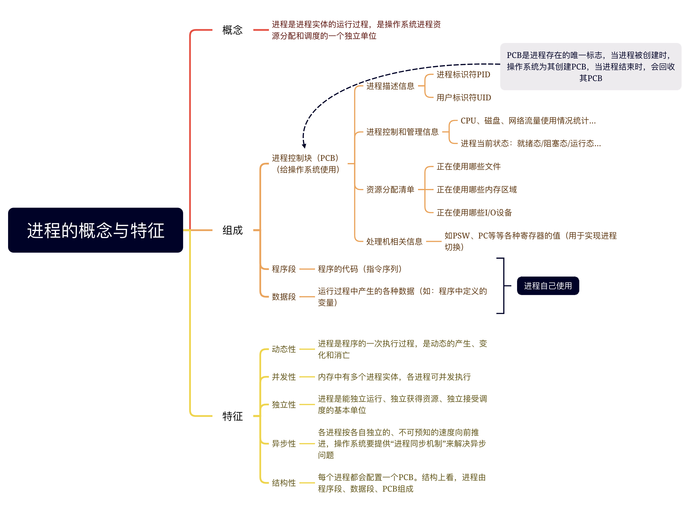
进程的状态与转换
进程状态的转换
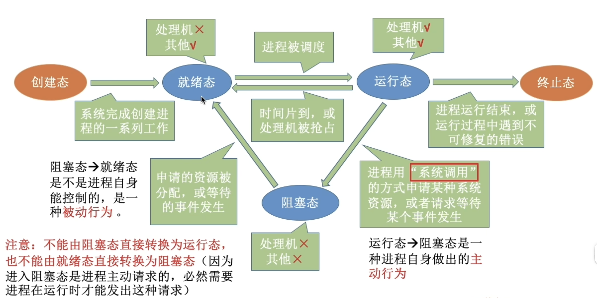
进程的状态
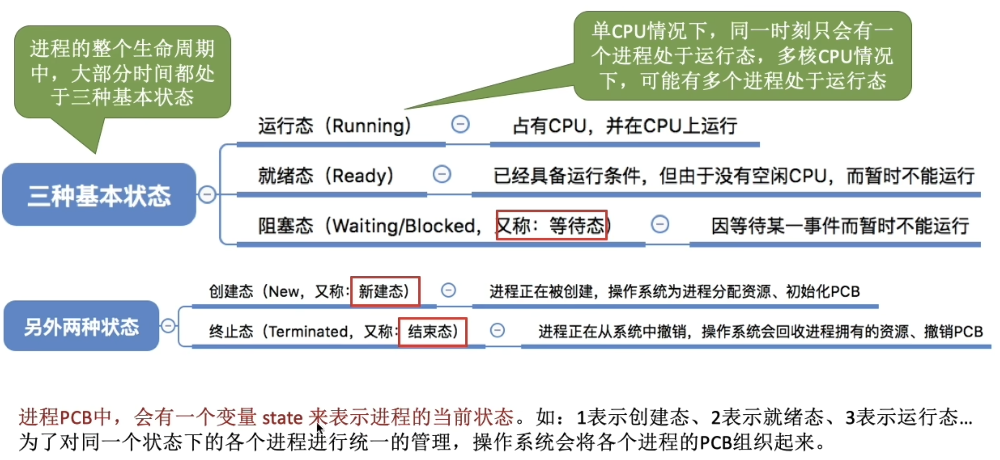
进程的组织
进程的组织分为两种方式，其一是链接方式，也就是链表。还有一种是索引方式，也就是哈希表。不过大多数操作系统都用的是链表方式
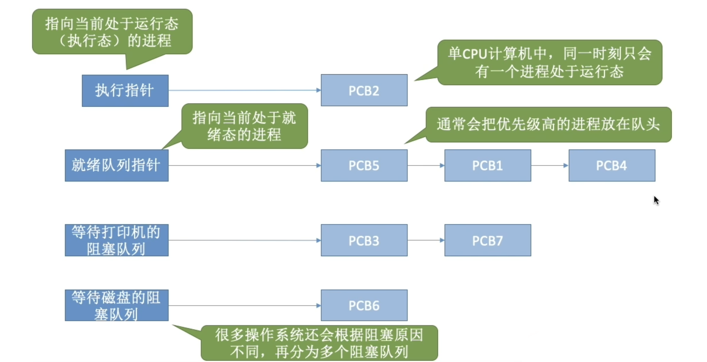
进程控制
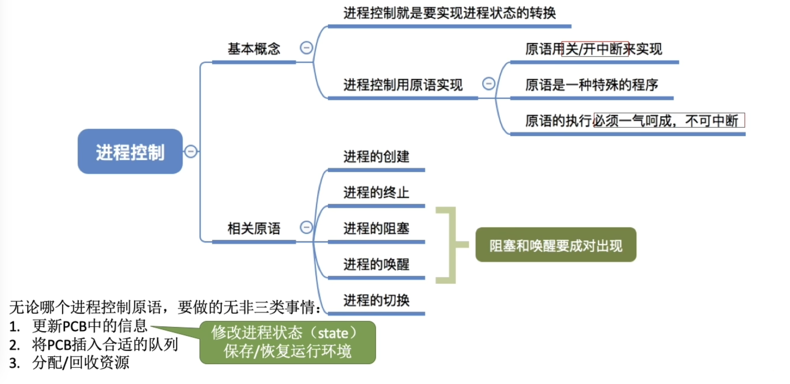
进程的创建
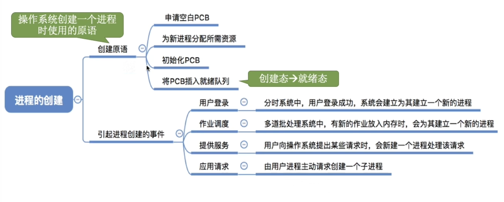
进程的终止
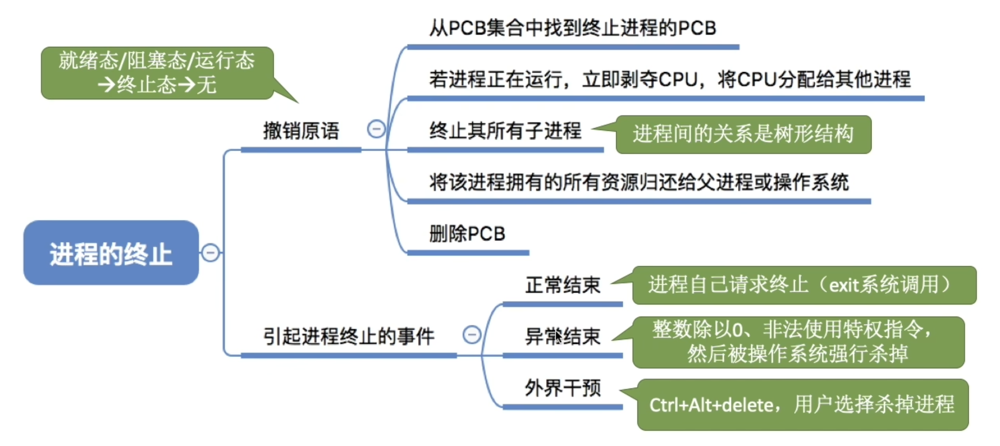
进程的阻塞与唤醒

进程的切换
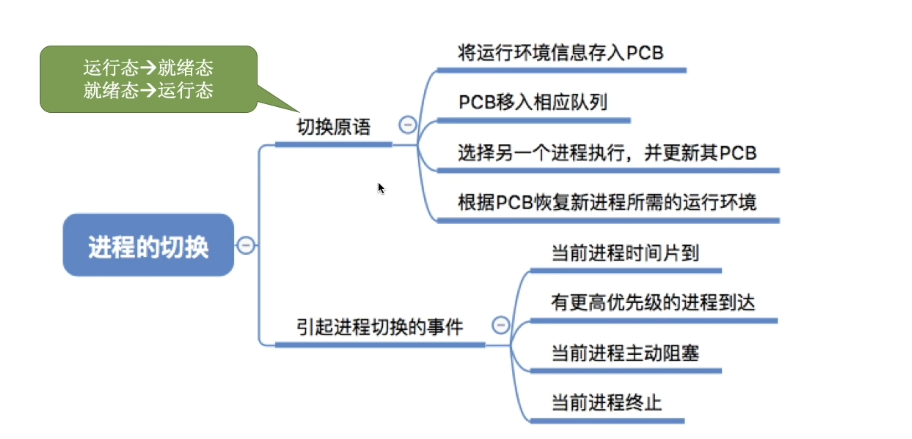
进程通信
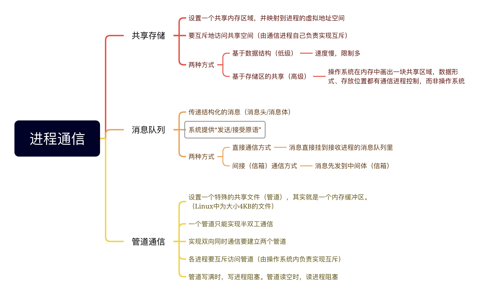
线程和多线程模型
引入线程机制后，有什么变化？
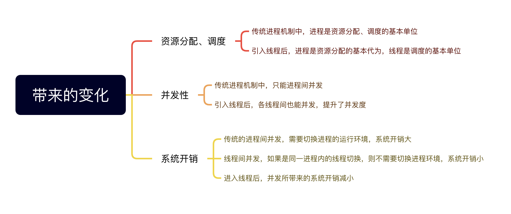
线程的属性
- 线程是处理机调度的单位
- 多CPU计算机中，各个线程可占用不同的CPU
- 每个线程都有一个线程ID、线程控制块（TCB）
- 线程也有就绪、阻塞、运行三种基本状态
- 线程几乎不拥有系统资源
- 同一进程的不同线程间共享进程的资源
- 由于共享内存地址空间，同一进程中的线程间通信甚至无需系统干预
- 同一进程中的线程切换，不会引起进程切换
- 不同进程中的线程切换，会引起进程切换
- 切换同进程内的线程，系统开销很小
- 切换进程，系统开销大
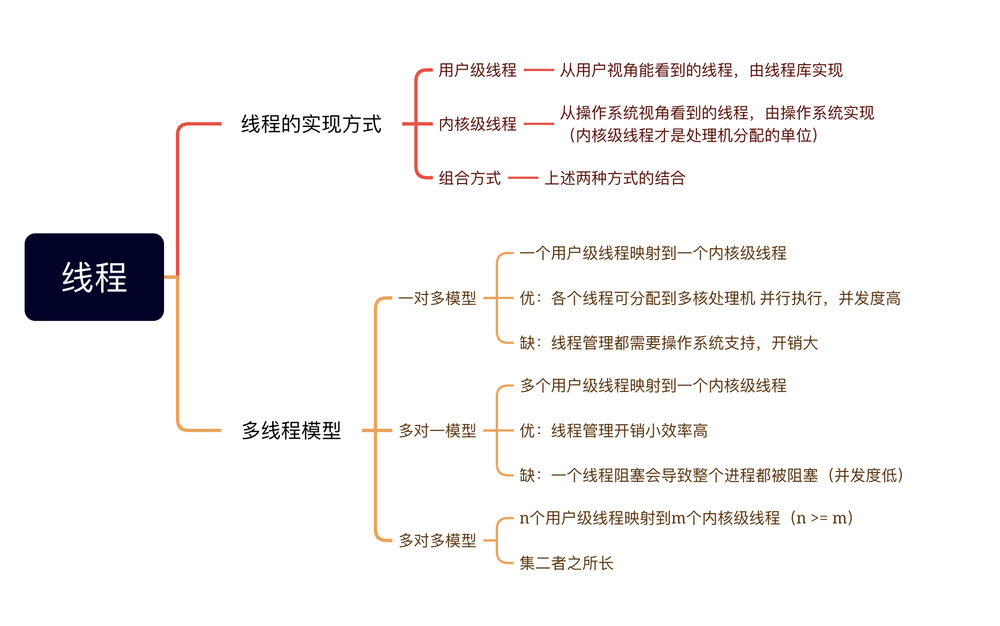
线程的实现方式
用户级线程（User-Level Thread, ULT）
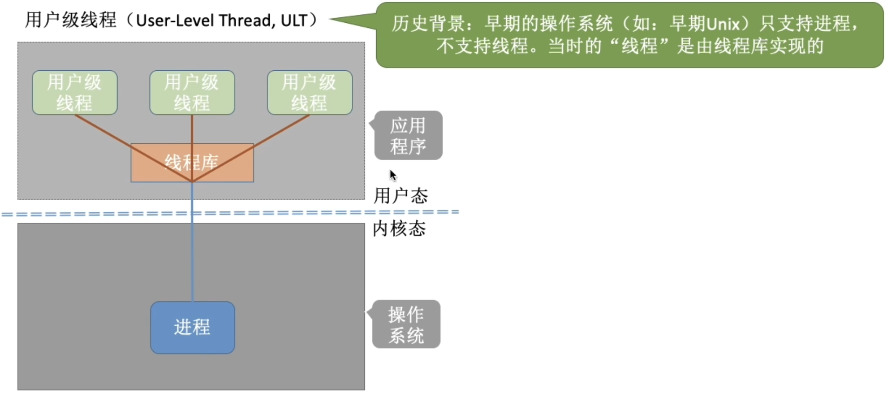
线程的管理工作有谁来完成？
用户级线程由应用程序通过线程库实现，所有的线程管理工作都由应用程序负责（包括线程切换）
线程的切换是否需要CPU变态？
用户级线程中，线程切换可以在用户态下即可完成，无需操作系统干预
操作系统是否能意识到用户级线程的存在？
在用户看来，是有多个线程。但是操作系统内核看来，并意识不到线程的存在。“用户级线程”就是“从用户视角看能看到的线程”
这种线程的实现方式有什么优点和缺点？
优点：用户级线程的切换在用户空间即可完成，不需要切换到内核态，线程管理的系统开销小，效率高
缺点：当一个用户级线程被阻塞后，整个进程都会被阻塞，并发度不高。多个线程不可在多核处理机上并行运行。
内核级线程（Kernel-Level Thread, KLT）
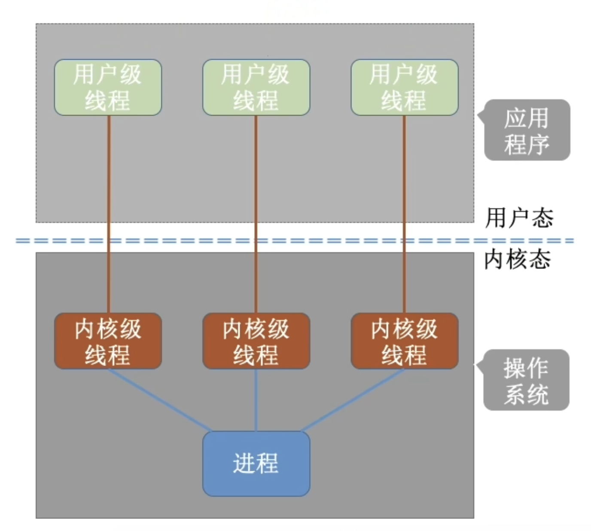
线程的管理工作由谁来完成？
内核级线程的管理工作由操作系统内核完成
线程的切换是否需要CPU变态？
线程调度、切换等工作都由内核负责，因此内核级线程的切换必然需要核心态下才能完成。
操作系统是否能意识到内核级线程的存在？
操作系统会为内个内核级线程创建相应的TCB（Thread Control Block，线程控制块），通过TCB对线程进行管理。“内核级线程”就是“从操作系统内视角看能看到的线程”
这种线程的实现方式有什么优点和缺点？
优点：当一个线性被阻塞后，别的线程还可以继续执行，并发能力强。多线程可在内核处理机上并行运行。
缺点：一个用户进程会占用多个内核级线程，线程切换由操作系统内核完成，需要切换到核心态，因此线程管理的成本高，开销大。
多线程模型
一对一模型

一对一模型：一个用户级线程映射到一个内核级线程。每个用户进程有与用户级线程同数量的内核级线程。
优点：当一个线程被阻塞后，别的线程还可以继续执行，并发能力强。多线程可在多核处理机上并行运行。
缺点：一个用户进程会占用多个内核级线程，线程切换由操作系统内核完成，需要切换核心态，因此线程管理的成本高，开销大。
多对一模型
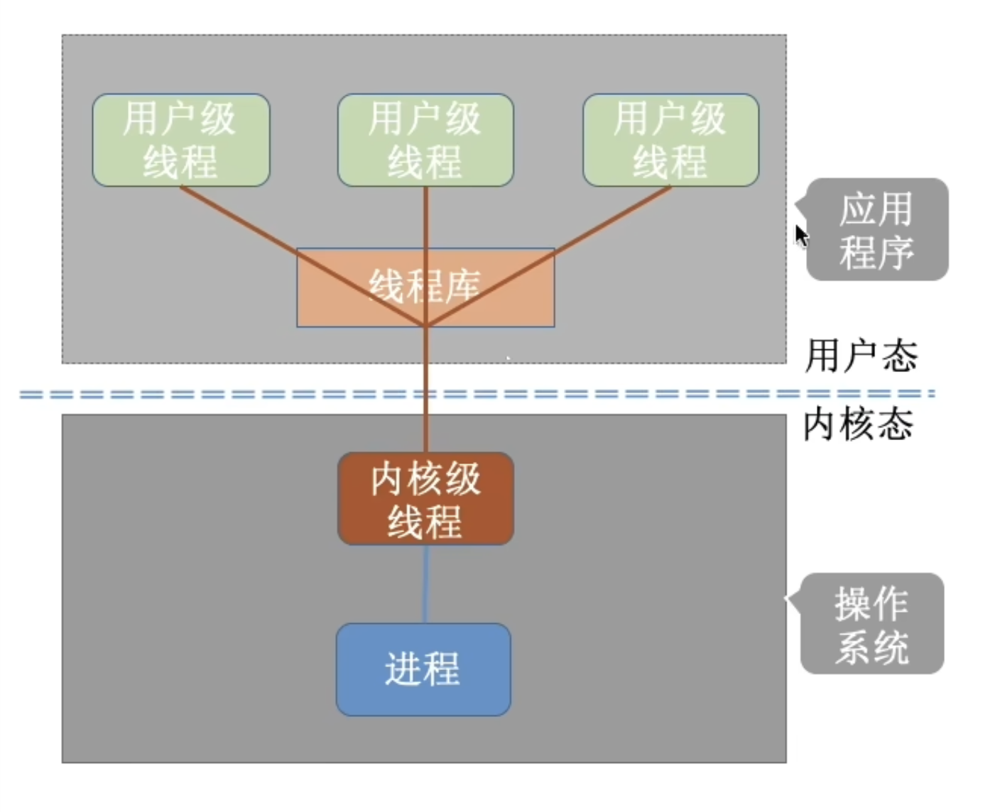
多对一模型：多个用户级线程映射到一个内核级线程。且一个进程只被分配一个内核级线程。
优点：用户级线程的切换在用户空间即可完成，不需要切换到核心态（而是通过用户库），线程管理的系统开销小，效率高
缺点：当一个用户级线程被阻塞后，整个进程都会被阻塞，并发度不高。多个线程不可在多核处理机上并行运行
多对多模型
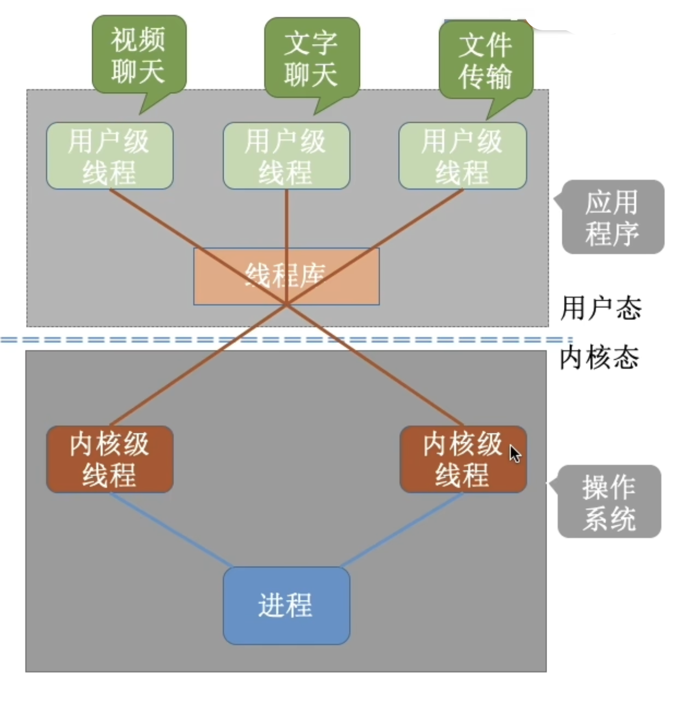
多对多模型：n个用户级线程映射到m个内核级线程（n >= m）。每个用户进程对应m个内核级线程。
克服了多对一模型并发度不高的缺点（一个阻塞全体阻塞），又克服了一对一模型中一个用户进程占用太多内核级线程，开销太大的缺点。
内核级线程中可以运行任意一个有映射关系的用户级线程代码，只有两个内核级线程中正在运行的代码逻辑都阻塞时，这个进程才会阻塞
线程的组织与控制
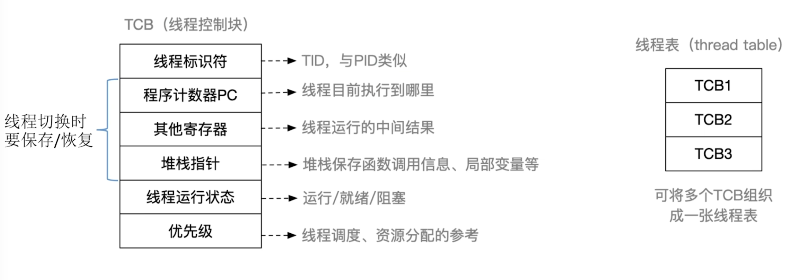
CPU调度
调度的时机、切换与过程、方式
进程切换的时机
- 什么时候需要进程调度
- 什么时候不能进行进程调度
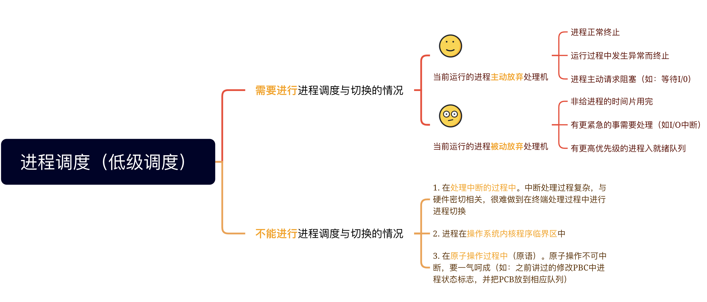
临界资源：一个时间段内只允许一个进程使用的资源。各进程需要互斥地访问临界资源
临界区：访问临界资源的那段代码
普通临界区访问的临界资源不会直接影响操作系统内核的管理工作。因此在访问普通临界区时可以进行调度与切换。例如：进程访问打印机
进程切换与过程
“狭义的调度”与“切换”的区别
狭义的进程调度：从就绪队列中选中一个要运行的进程（这个进程可以使刚刚被暂停执行的进程，也可能是另一个进程）
进程切换：一个进程让出处理机，由另外一个占用处理机。
广义的进程调度：包含了进程调度和进程切换两个不走
进程切换的过程需要做什么？
对原来运行的进程各种数据的保存
对新的进程各种数据的恢复
（如：程序计数器、程序状态字、各种数据寄存器等处理机现场信息，这些信息一般都保存在进程控制块中）
进程调度的方式
非剥夺调度方式（非抢占式）
实现简单，系统开销小但是无法及时处理紧急任务，适合于早期的批处理系统
剥夺调度方式（抢占式）
可优先处理更紧急的进程，也可实现让各进程按时间片轮流执行的功能（通过时钟中断）。适合于分时操作系统、实时操作系统
进程调度的时机
- 创建新进程
- 进程退出
- 运行进程阻塞
- I/O中断发生（可能唤醒某些阻塞进程）
- 非抢占式调度策略，只有运行进程阻塞或退出才触发调度程序工作
- 抢占式调度策略，每个时钟中断或K歌时钟中断会触发调度程序工作
闲逛进程的特性
优先级最低
可以是0地址指令，占一个完整的指令周期（指令周期末尾例行检查中断）
能耗低
调度算法的评价指标
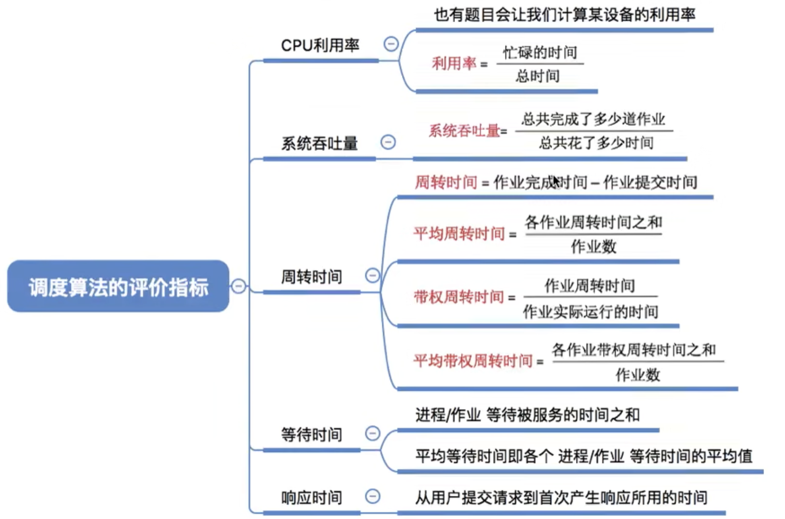
调度算法
先来先服务（FCFS）
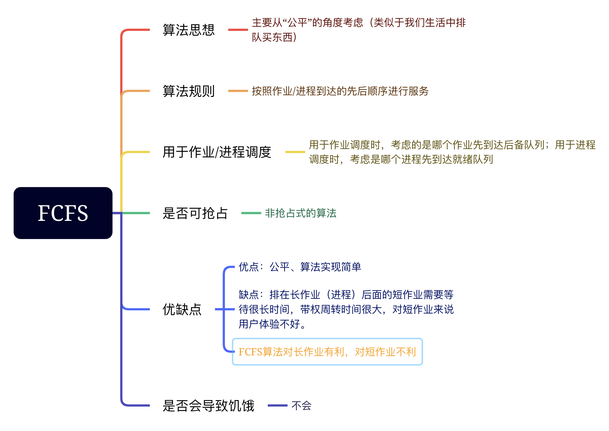
短作业优先（SJF）
抢占式的短作业/进程优先调度算法（最短剩余时间优先，SRNT算法）的平均等待时间、平均周转时间最少
或者，在所有进程都几乎同时到达时，采用SJF调度算法的平均等待时间、平均周转时间最少
SRTN的平均等待时间、平均周转时间最少
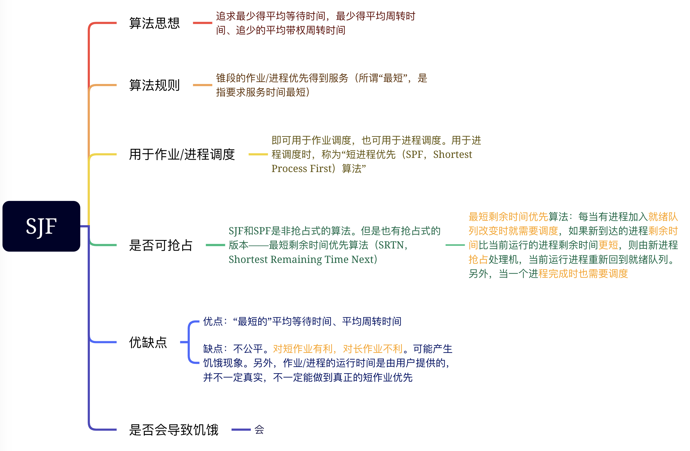
高响应比优先（HRRN）
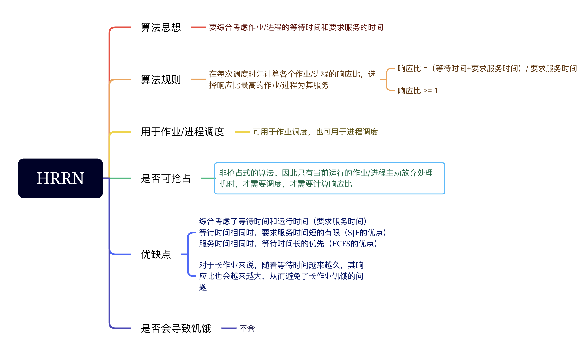
接下来看一下他们的比较
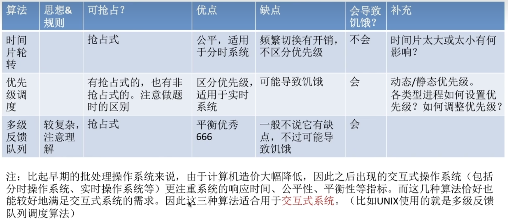
时间片轮转（RR, Round-Robin）
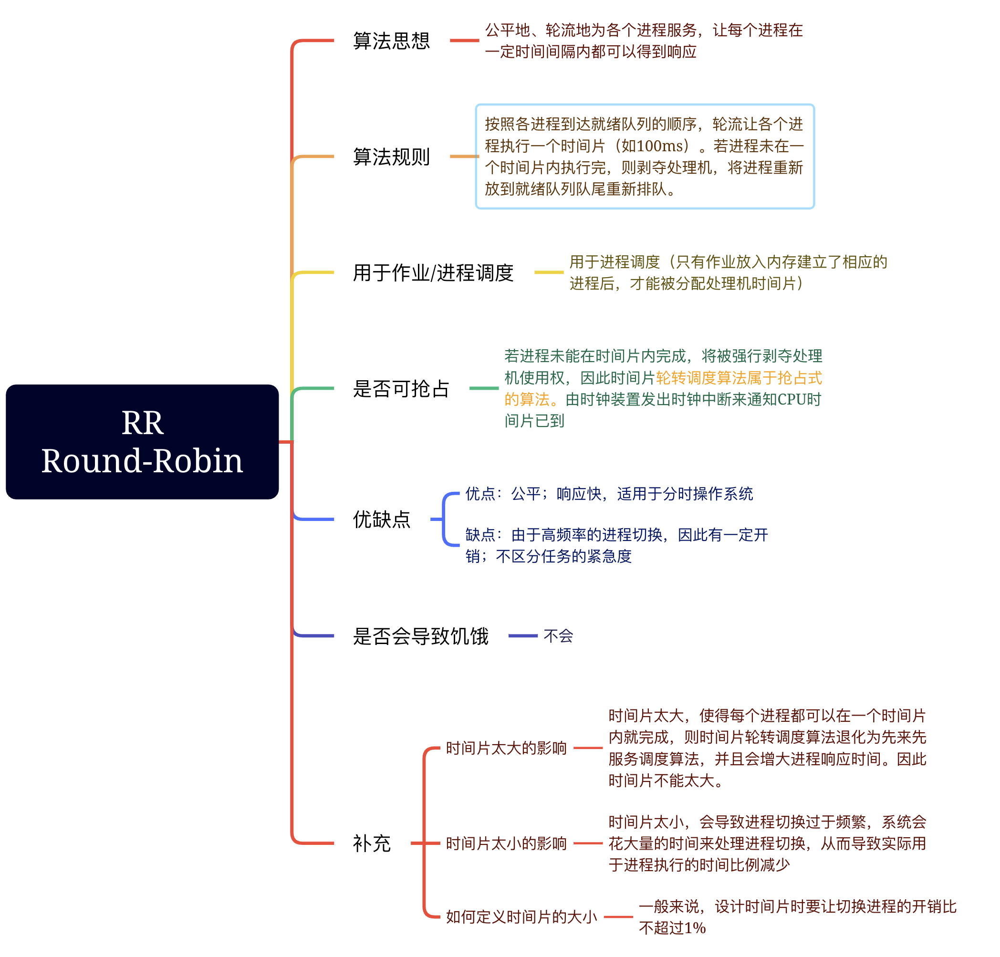
优先级
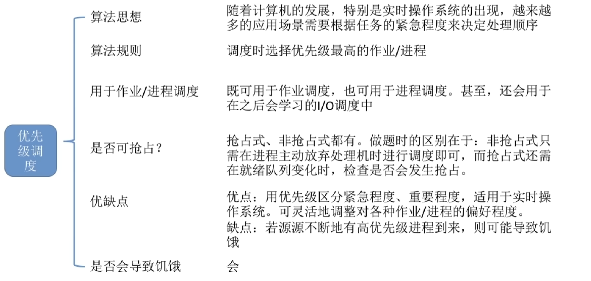
- 系统进程优先级 高于 用于进程
- 前台进程优先级 高于 后台进程
- 操作系统 **更偏好 **I/O繁忙型进程
动态优先级
- 和上面静态优先级相对应的是动态优先级。创建进程时先赋予进程⼀个优先级，但优先级会随进程的推进或等待时间的增加⽽改变，以便获得更好的调度性能。例如，规定优先级随等待时间的增加⽽提⾼，于是，对于优先级初值较低的进程，等待⾜够长的时间后也可获得CPU
多级队列反馈算法
多级队列反馈算法综合了
- FCFS算法的公平，
- SJF算法能尽快处理完短作业，平均等待/周转时间等参数很优秀
- 时间片调度轮转算法可以让各个进程得到及时的响应
- 优先级调度算法可以灵活地调整各种进程被服务的机会
下面的例子很好的说明了这个算法
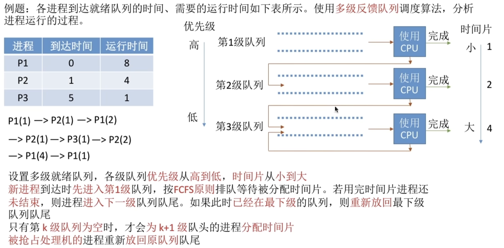
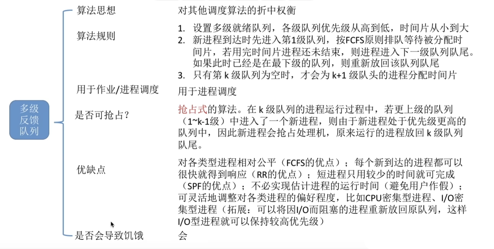
接下来看一下他们的比较
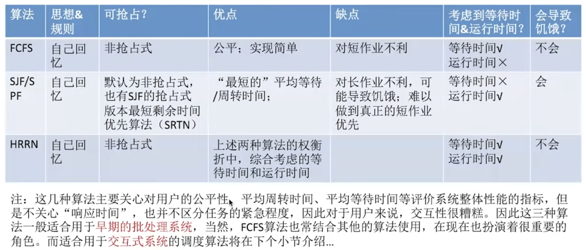
多级队列调度算法
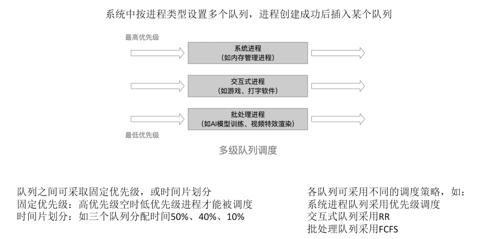
同步与互斥
同步与互斥的基本概念
异步：和同步相对，同步是顺序执行，而异步是彼此独立，在等待某个事件的过程中继续做自己的事，不要等待这一事件完成后再工作。线程是实现异步的一个方式，异步是让调用方法的主线程不需要同步等待另一个线程的完成，从而让主线程干其他事情。
异步：在并发环境中，各任务各自独立执行，相互之间互不干扰。
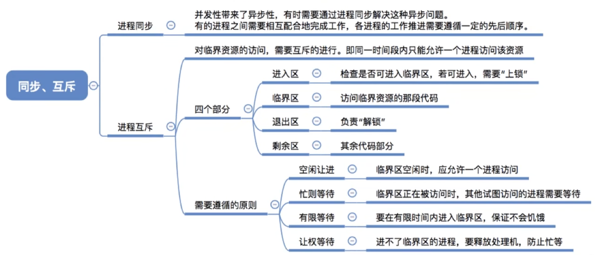
进程互斥的软件实现方法
单标志法（违背空闲让进）
1 | int turn = 0; // turn 表示当前允许进入临界区的进程号 |
该算法可以实现“同一时刻最多只允许一个进程访问临界区”
但是当P1进程先执行时，就会陷入“死”循环，需要等到时间片用完才可切换P0进程。因此违背了实现临界区互斥必须遵循的“空闲让进”原则
双标志检查法
1 | bool flag[2]; // 表示进入临界区意愿的数组 |
如果连个进程交替执行，此时他俩几乎同时跳过了检查，所以导致都可以进入临界区。
因此，双标志先检查法的主要问题是：违反了“忙则等待”的原则
原因在于，检查和上锁不是一气呵成的，在检查后，上锁前可发生进程切换
双标志后检查法（违背空闲让进、有限等待）
1 | bool flag[2]; // 表示进入临界区意愿的数组 |
由于先上锁，后检查。在两个进程并发执行时，会导致两个进程互相争抢进入临界区，谁也不让谁进入，导致饥饿现象。
虽然解决了“忙则等待”，但是违背了“空闲让进”和“优先等待”
Peterson算法（未遵守让权等待）
1 | bool flag[2]; |
Peterson 算法用软件方法解决了进程互斥问题，遵循了空闲让进、忙则等待、优先等待三个原则，但是仍然未遵守让权等待的原则
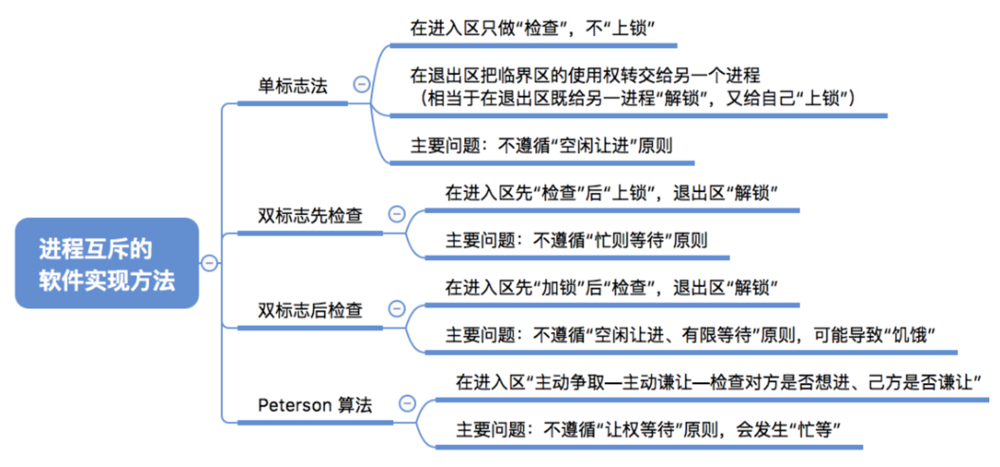
进程互斥的硬件实现方法
中断屏蔽法（适用于单处理机、内核进程）
TestAndSet指令（不满足让权等待，适用于多CPU）
1 | // lock 表示当前临界区是否被加锁 |
TSL 指令把上锁和检查操作用硬件的方式变成了一气呵成的的原子操作。
优点：
- 实现简单，无需像让见实现方法那样严格检查是否会有逻辑漏洞
- 适用于多处理机环境
缺点：
- 不满足“让权等待”原则，暂时无法进入临界区的进程会占用CPU并循环执行TSL指令，从而导致“忙等”
Swap指令（不满足让权等待、适用于多CPU）
Swap 指令是用硬件实现的，执行的过程不允许被中断，只能一气呵成
1 | // Swap 指令的作用是交换两个变量的值 |
优点：
- 实现简单，无需像让见实现方法那样严格检查是否会有逻辑漏洞
- 适用于多处理机环境
缺点：
不满足“让权等待”原则，暂时无法进入临界区的进程会占用CPU并循环执行Swap指令，从而导致“忙等”